Plotting Examples
didint_plot() prepares the data for parallel trends plots and event study plots, and plot draws them once a Makie backend such as CairoMakie is loaded. This page shows each kind of plot and its options, with the merit.csv data of the Examples page. The formulas behind the plots are in the Plotting with didint_plot() section.
using DiDInt, CSV, DataFrames
using CairoMakie
merit = CSV.read(joinpath(@__DIR__, "../../test/data/merit.csv"), DataFrame);
treated_states = [34, 57, 58, 59, 61, 64, 71, 72, 85, 88];
treated_times = [2000, 1998, 1993, 1997, 1999, 1996, 1991, 1998, 1997, 2000];One call to didint_plot() prepares the data for every kind of plot:
plot_data = didint_plot(
"coll", "state", "year", merit;
treatment_times = treated_times,
treated_states = treated_states,
covariates = ["asian", "black", "male"]
)DID-INT plot data
Outcome: coll
Covariates: asian, black, male
ccc options: none, hom, time, state, add, int
Treated states: 34 (2000), 57 (1998), 58 (1993), 59 (1997), 61 (1999), 64 (1996),
71 (1991), 72 (1998), 85 (1997), 88 (2000)
Controls: never-treated states
Periods: 1 year, from 1989 to 2000
Tables of plot data, each drawn with plot(x; plot_type = ...) (see ?DiDIntPlot)
event 126 rows: ccc, time_since_treatment, y, se, ci_lower, ci_upper, ngroup
conditional 3060 rows: state, time, period, ccc, lambda, n
conditional2 23100 rows: state, time, period, ccc, delta, n, treated_state, base_period, treat_period
integrated 4620 rows: state, time, period, delta, n, treated_state_covars, treat_period
integrated2 4620 rows: state, time, period, delta, n, treated_state_covars, base_period, treat_periodThe plot_type argument of plot chooses the plot:
plot_type | Plot |
|---|---|
"event" | Event study, one panel per ccc option |
"conditional" | Conditional parallel trends: the outcome means by period, per ccc option or per treated state |
"conditional2" | Conditional parallel trends: changes since the pre-treatment period, per treated state and ccc option |
"integrated" | Integrated parallel trends: changes since the previous period, per treated state |
"integrated2" | Integrated parallel trends: changes since the pre-treatment period, per treated state |
In every plot a dashed vertical line marks the first treated period, the treated_states argument selects the treated states to show, and panels of treated states are ordered from the earliest treated state to the latest. The pre-treatment period of a treated state is the period before its first treated period.
The data of each plot are in the table of the same name (plot_data.conditional, plot_data.integrated2, and so on). To prepare only some of them, pass their names to the plot_type argument of didint_plot(), for example plot_type = ["event", "integrated2"].
Event Study Plots
The event study plot shows the mean of the treated states' covariate-adjusted outcomes by period relative to treatment, with its confidence interval, in one panel per ccc option.
figure = plot(plot_data; plot_type = "event")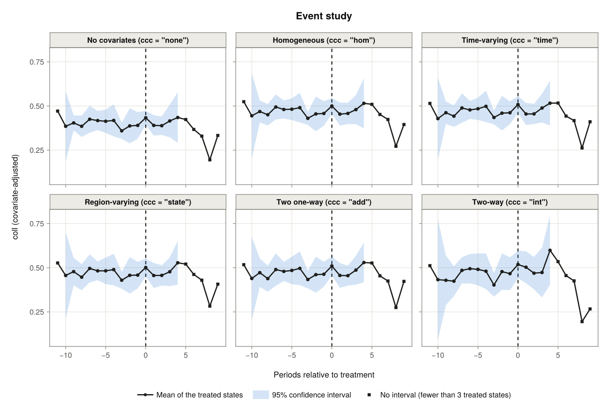
A confidence interval is drawn where at least three treated states are behind an estimate; the estimates without one are marked by squares. The groupmin argument changes that number. The ccc argument selects the options to show and window the periods:
figure = plot(plot_data; plot_type = "event", ccc = ["none", "int"], window = (-6, 4))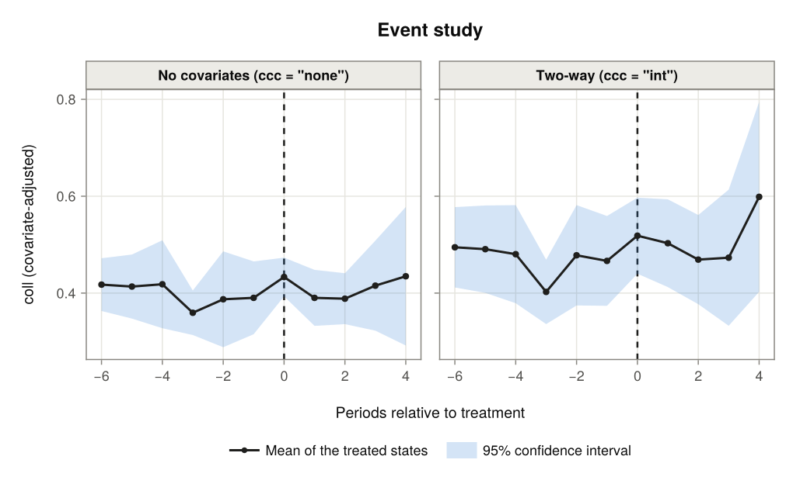
With treated_states, the means and intervals are computed for the selected states only, and weights = false weights the treated states equally instead of by their numbers of observations:
figure = plot(plot_data; plot_type = "event", ccc = "state",
treated_states = [57, 59, 72, 85], weights = false, groupmin = 2)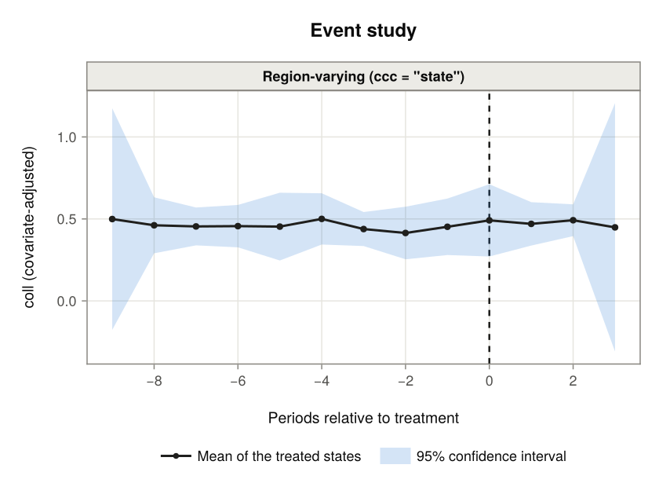
Conditional Parallel Trends Plots
The conditional parallel trends plots are those of the ccc options other than "int". plot_type = "conditional", the default plot, shows the covariate-adjusted mean outcome of each state and period (the lambda column of plot_data.conditional). plot_type = "conditional2" shows changes in those means since the pre-treatment period.
Outcome means, one panel per ccc option
By default there is one panel per ccc option, including "none" for the unadjusted means, with a line for every state. Each treated state has its own colour and the never-treated states are grey.
figure = plot(plot_data)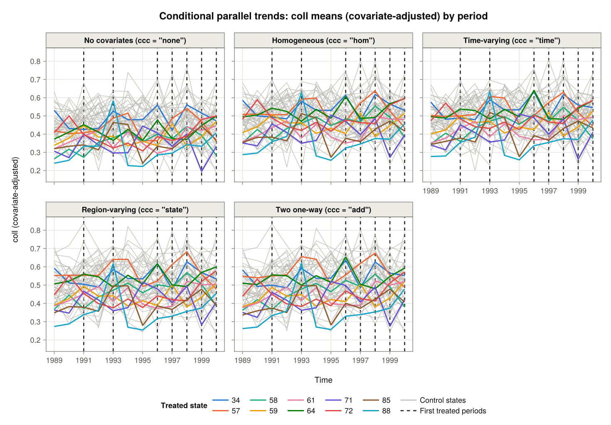
The ccc and treated_states arguments select the options and the treated states to show.
figure = plot(plot_data; treated_states = 72)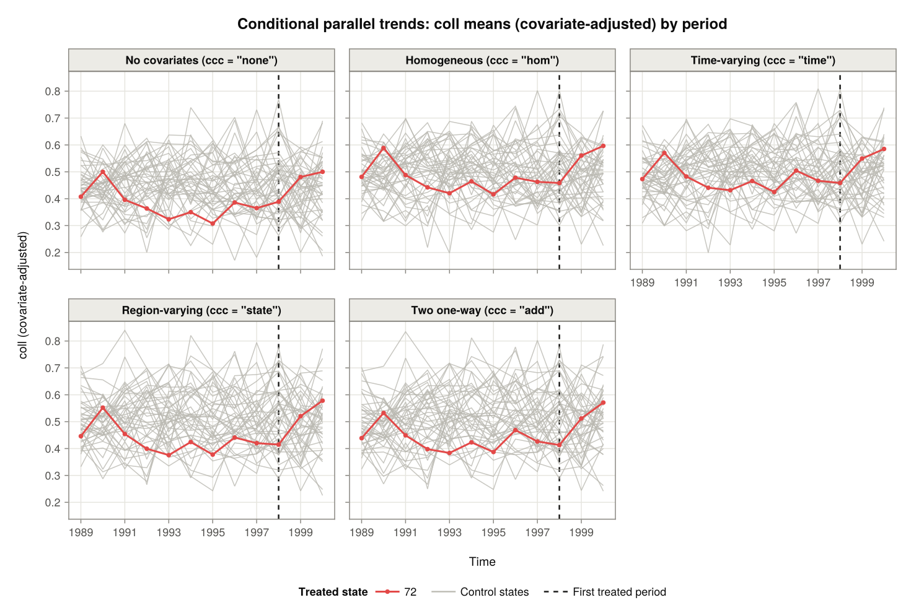
Three treated states under two of the options:
figure = plot(plot_data; ccc = ["none", "state"],
treated_states = [71, 58, 64])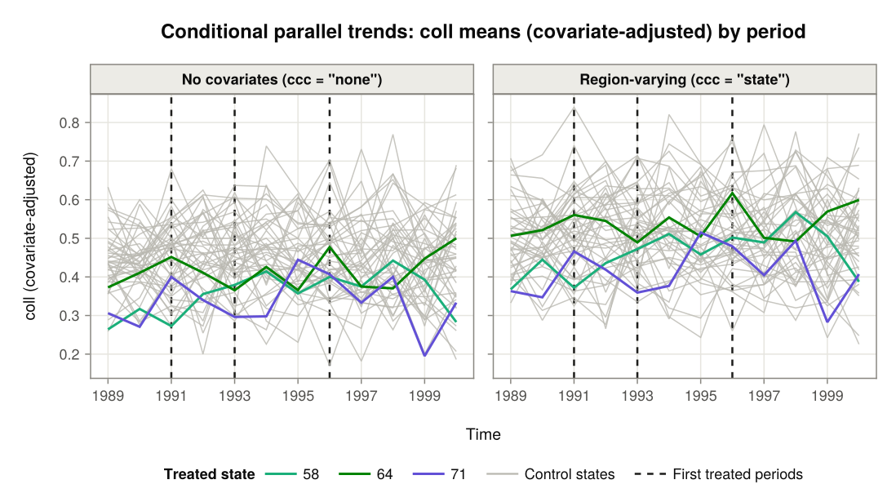
Outcome means, one panel per treated state
With facet = "state" there is one panel per treated state and ccc option, a row of panels per treated state; ccc selects the options, here a single one. Each panel compares the treated state with the average of its control states. Parallel trends under that option means that the two lines move in parallel before the dashed line.
figure = plot(plot_data; facet = "state", ccc = "state")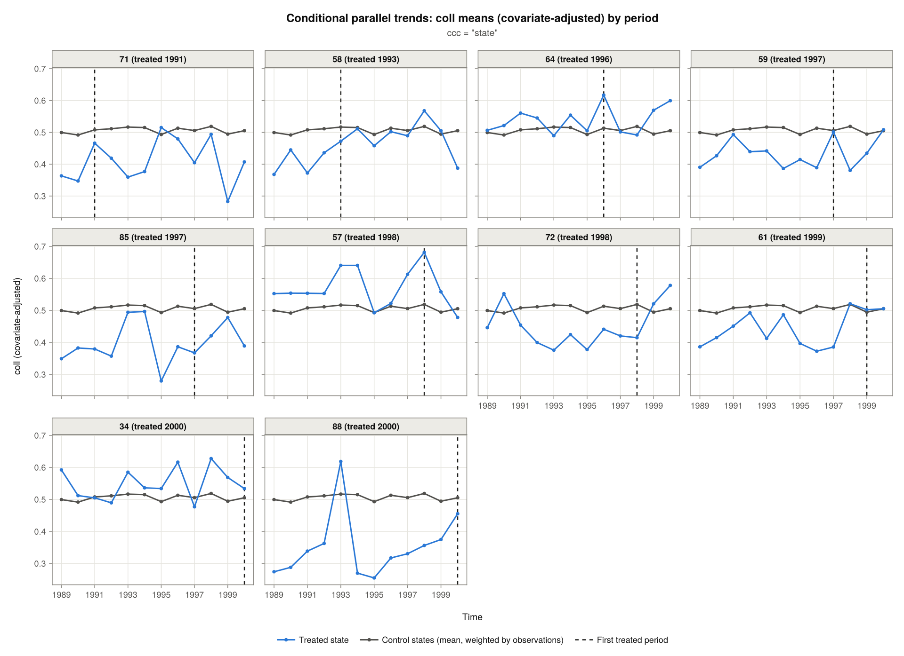
The average weights the control states by their numbers of observations; weights = false weights them equally. controls = "separate" draws a line for each control state instead of their average:
figure = plot(plot_data; facet = "state", ccc = "state", controls = "separate",
treated_states = [71, 58])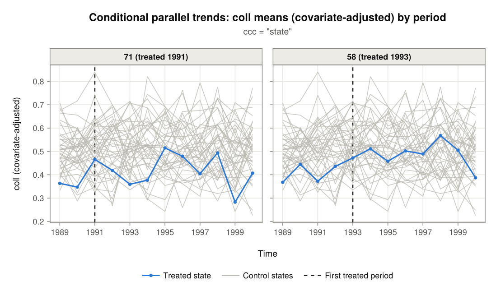
ncols sets the number of columns of panels, here for three selected states:
figure = plot(plot_data; facet = "state", ccc = "hom", weights = false,
treated_states = [71, 64, 72], ncols = 1, size = (640, 780))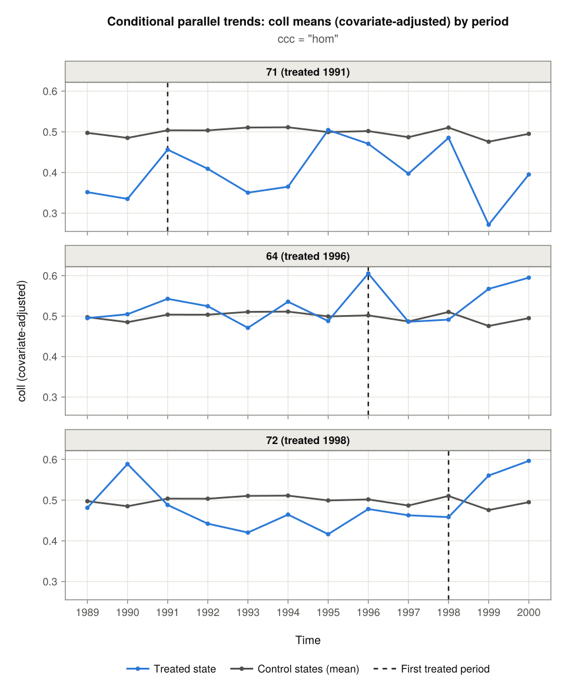
With several ccc options (or without ccc, which shows them all), each treated state has a row of panels, one per option:
figure = plot(plot_data; facet = "state", ccc = ["hom", "state", "add"],
treated_states = [71, 72])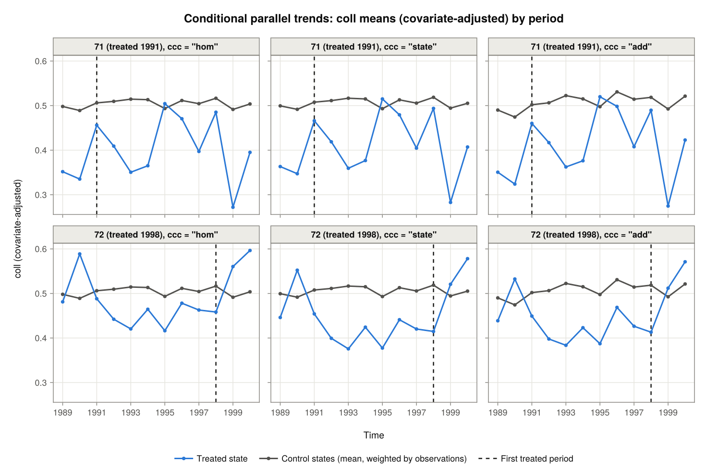
Changes since the pre-treatment period
didint() compares the change in a treated state's adjusted mean outcome since its pre-treatment period with the average change of its control states over the same periods. plot_type = "conditional2" draws exactly those changes, one panel per treated state and ccc option. Both lines are zero in the pre-treatment period. Here under a single option:
figure = plot(plot_data; plot_type = "conditional2", ccc = "state")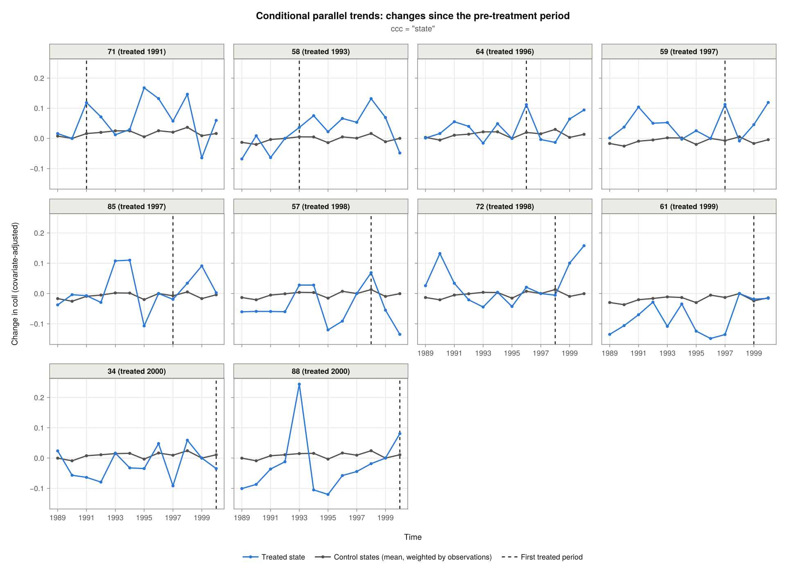
- In a treated period, the gap between the two lines is the ATT that
didint()estimates for that state and period. - Before treatment, the gap is a placebo estimate: the same comparison where no effect is expected yet. Gaps close to zero support parallel trends. Gaps that drift steadily towards or away from zero as treatment approaches suggest that the treated state was on a different trend, and a jump just before treatment suggests anticipation.
Without ccc, every option is shown, with a row of panels per treated state and a column per option. For one treated state this compares the options side by side:
figure = plot(plot_data; plot_type = "conditional2", treated_states = 72)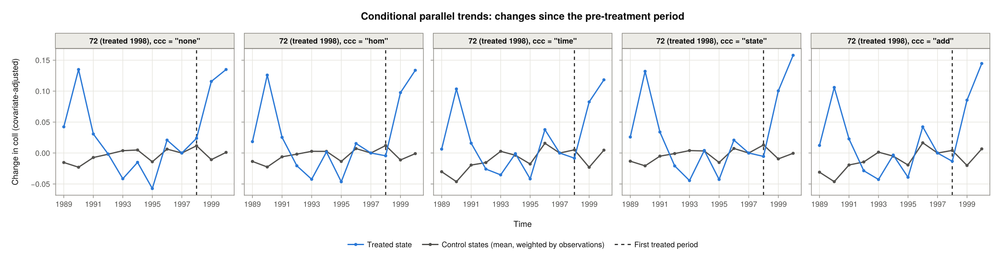
controls = "separate" draws each control state, here for one treated state:
figure = plot(plot_data; plot_type = "conditional2", ccc = "state",
controls = "separate", treated_states = 72)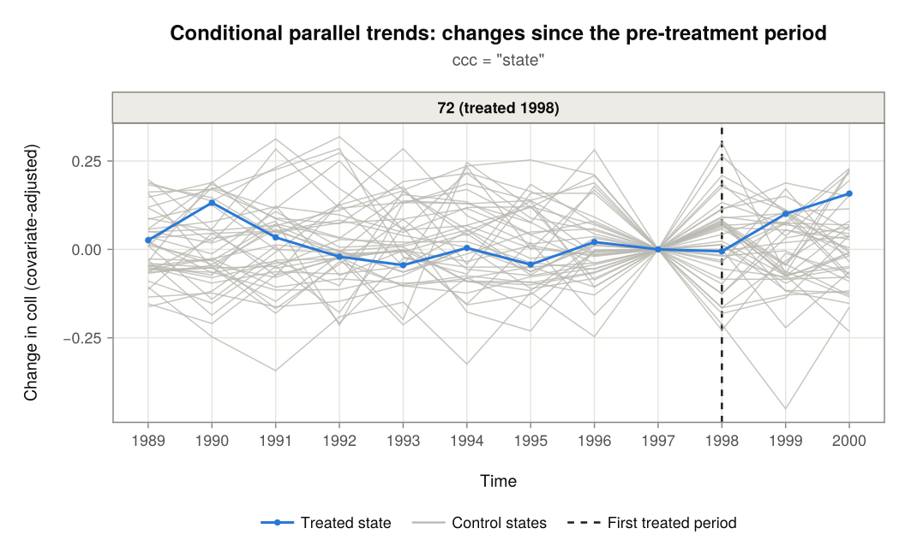
Not-yet-treated states as controls
The control states of a treated state are the never-treated states. Calling didint_plot() with notyet = true adds the states of later cohorts while they are not yet treated, as didint() does with the same argument. A not-yet-treated state is a control up to the period before its own treatment.
plot_notyet = didint_plot(
"coll", "state", "year", merit;
treatment_times = treated_times,
treated_states = treated_states,
covariates = ["asian", "black", "male"],
notyet = true
);figure = plot(plot_notyet; plot_type = "conditional2", ccc = "state",
controls = "separate", treated_states = [71, 64])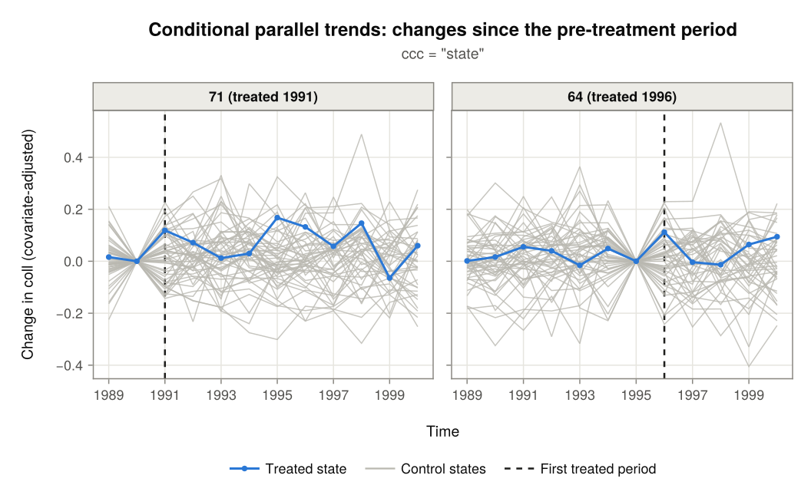
Integrated Parallel Trends Plots
The integrated parallel trends plots are those of ccc = "int". There is one panel per treated state, in which every state's outcome is predicted at the treated state's covariate means.
Changes since the previous period
plot_type = "integrated" draws the plot of Karim & Webb (2025): the change in the treated state's predicted outcome since the previous period (the delta column of plot_data.integrated) next to the average change of its control states. If the two lines stay close to each other in the periods before the dashed line, integrated parallel trends is plausible for that state. In the period at the dashed line, the gap between them is the ATT that didint() estimates for that state's first treated period.
figure = plot(plot_data; plot_type = "integrated")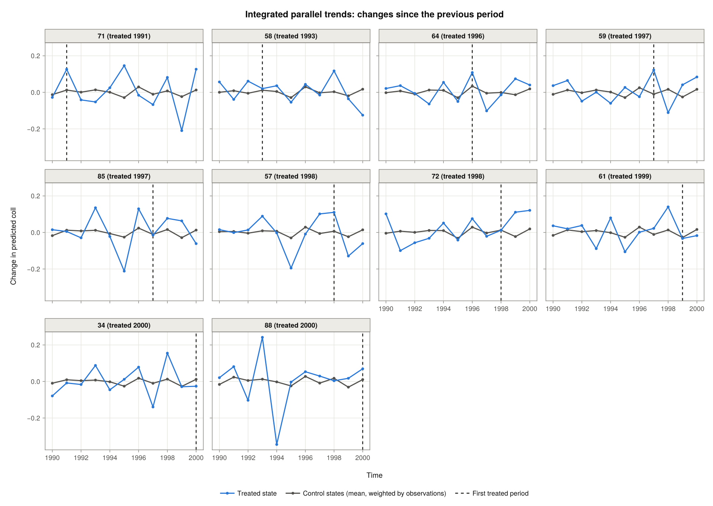
As for the conditional plots, weights = false weights the control states equally, controls = "separate" draws each control state, and notyet = true in didint_plot() adds the not-yet-treated states to the controls:
figure = plot(plot_data; plot_type = "integrated", controls = "separate",
treated_states = [71, 58])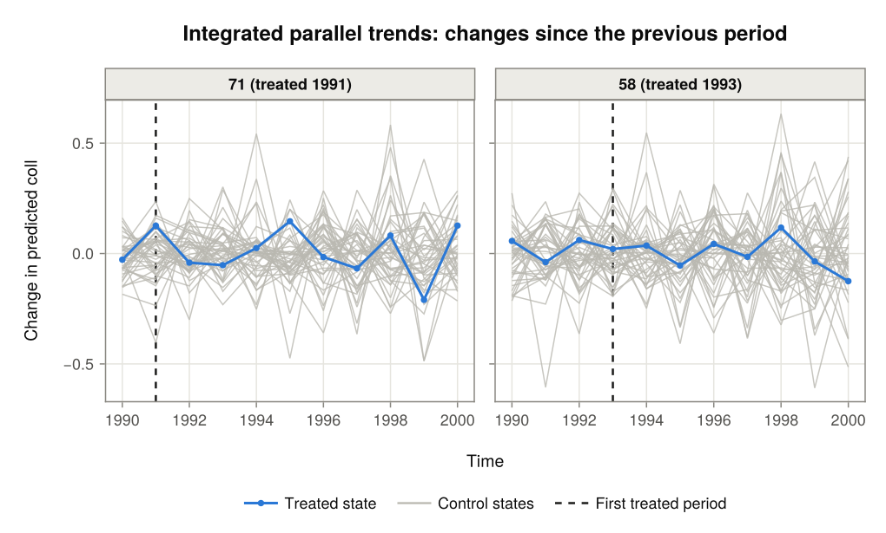
Changes since the pre-treatment period
plot_type = "integrated2" draws the a similar comparison, but with every change measured from the pre-treatment period of the treated state (as opposed to just measuring the change from the prior period), as didint() measures it. Both lines are zero in that period.
figure = plot(plot_data; plot_type = "integrated2")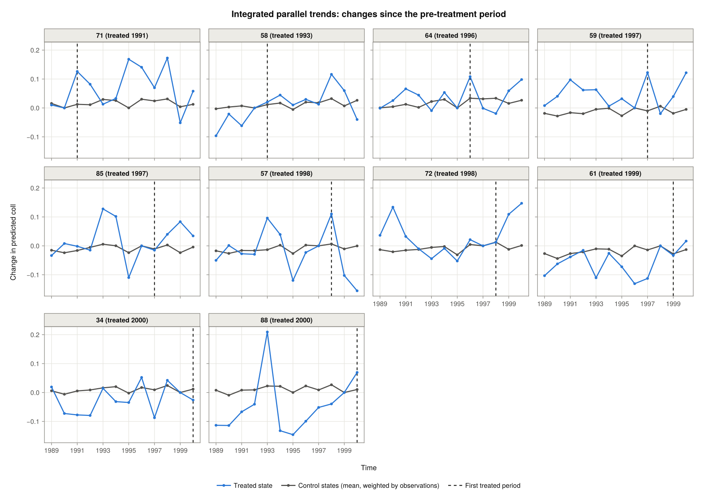
As in "conditional2", the gap between the two lines is the ATT that didint() estimates in a treated period, and a placebo estimate before treatment. The data behind this plot are in plot_data.integrated2:
first(plot_data.integrated2, 4)| Row | state | time | period | delta | n | treated_state_covars | base_period | treat_period |
|---|---|---|---|---|---|---|---|---|
| String | String | Int64 | Float64 | Int64 | String | Int64 | Int64 | |
| 1 | 34 | 1989 | 0 | 0.0191438 | 324 | 34 | 10 | 11 |
| 2 | 11 | 1989 | 0 | 0.223085 | 84 | 34 | 10 | 11 |
| 3 | 12 | 1989 | 0 | 0.0627656 | 65 | 34 | 10 | 11 |
| 4 | 13 | 1989 | 0 | 0.0913153 | 60 | 34 | 10 | 11 |
Saving and Customising a Plot
plot returns a Makie Figure, which can be saved with save or modified like any other Makie figure. The title, size and ncols arguments change its appearance (title = "" leaves the title out), and theme takes a Makie Theme that replaces the default look.
figure = plot(plot_data; plot_type = "integrated2", treated_states = [72, 57],
title = "Merit aid and college attendance", size = (760, 420))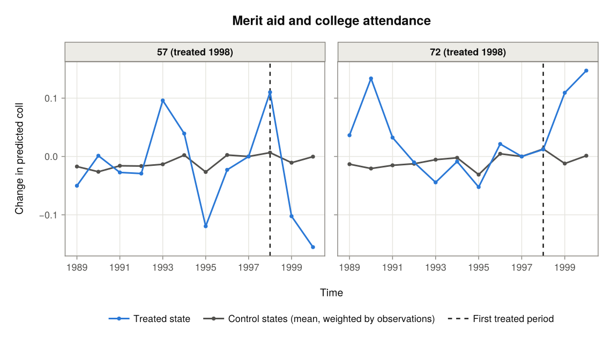
save("trends.png", figure)